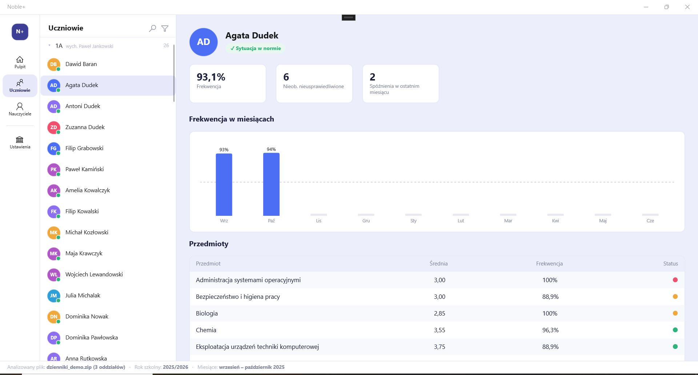

Analiza całej szkoły jednym kliknięciem
Wczytaj eksport z dziennika elektronicznego i zobacz szkołę podstawową z wielu stron naraz: frekwencję, oceny, tematy lekcji, zagrożenia klasyfikacją i nadgodziny nauczycieli. Szybko, bez wysyłania danych uczniów na jakikolwiek serwer.

Szkoła widziana z każdej strony
Zamiast przeklikiwać kolejne zestawienia w dzienniku, wczytujesz jeden plik i dostajesz pełny obraz szkoły.
-
Frekwencja
Frekwencja uczniów, klas i całej szkoły, także w rozbiciu na miesiące.
-
Oceny
Średnie ważone i statusy przy każdym przedmiocie pokazują od razu, gdzie jest problem.
-
Niewpisane tematy
Od razu widzisz, kto i w których klasach ma zaległości we wpisach.
-
Ryzyko niesklasyfikowania
Wychwyć zagrożonych uczniów, gdy jest jeszcze czas na reakcję.
-
Pensum nauczycieli
Zarządzaj pensum w jednym miejscu. Ustawienia zostają na Twoim komputerze.
-
Raporty zbiorcze
Gotowe zestawienia dla całej szkoły, które wyeksportujesz do Excela.
-
Pisma w sprawie obowiązku szkolnego
Noble+ ustala właściwy organ egzekucyjny (wójt, burmistrz lub prezydent) na podstawie rejestru TERYT.
-
Wiele dzienników
Działa z eksportami z Vulcan/UONET+, Librusa i innych systemów.
Godziny ponadwymiarowe jednym kliknięciem
Koniec z ręcznym liczeniem. Noble+ analizuje nadgodziny nauczycieli zgodnie z Kartą Nauczyciela i od razu przygotowuje raport.
- Analiza nadgodzin całej szkoły w jednym kroku
- Wyliczenia zgodne z Kartą Nauczyciela
- Zarządzanie pensum każdego nauczyciela
- Raport gotowy do eksportu w Excelu
| Nauczyciel | Pensum | Nadgodziny |
|---|---|---|
| Nauczyciel A | 18 | 2 |
| Nauczyciel B | 22 | 0 |
| Nauczyciel C | 18 | 4 |
Od eksportu do raportu w trzech krokach
Wszystko dzieje się na komputerze dyrektora.
-
Wyeksportuj dane
Pobierz z dziennika elektronicznego plik eksportu w formacie XML lub ZIP.
-
Wczytaj plik
Wskaż go na dysku. Analiza uruchamia się lokalnie, na Twoim urządzeniu.
-
Przeglądaj i eksportuj
Przeglądaj zestawienia z wielu perspektyw, a wyniki zapisz jako raport lub arkusz Excela.
Dane uczniów i nauczycieli zostają w Twojej szkole
- Cała analiza działa lokalnie i offline. Nie przechowujemy danych z dziennika na żadnym serwerze.
- Do serwera licencyjnego trafia wyłącznie kod licencyjny szkoły.
- Przy ustalaniu organu egzekucyjnego wysyłana jest tylko miejscowość i kod pocztowy ucznia, bez imienia i nazwiska.
- Brak telemetrii, analityki i reklam.
Zacznij analizować swoją szkołę
Noble+ jest aplikacją komercyjną na licencji szkoły. Przy uruchomieniu aplikacja wysyła kod licencyjny, a w odpowiedzi otrzymuje podpisaną cyfrowo informację o ważności licencji.